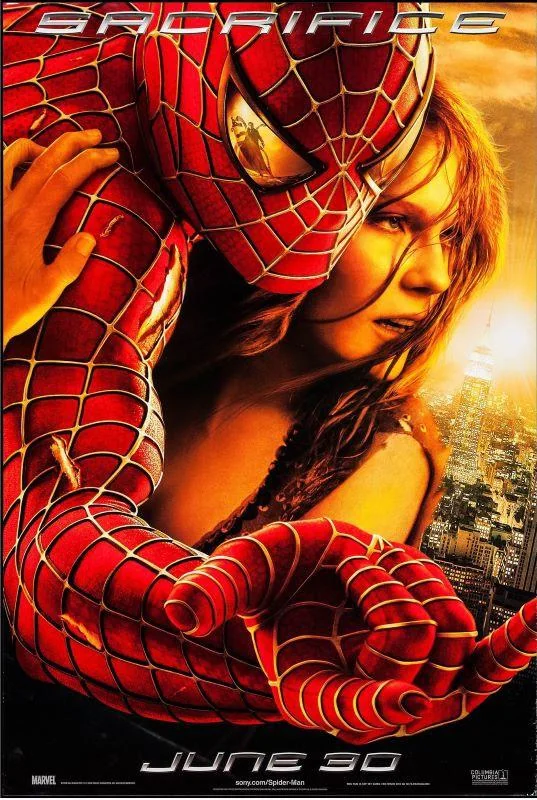

Categorias
-

Accion
-

Comedia
-

Fantasia
-

Romance
-

Animada
Harry Potter: La piedra filosofal (2001)

Harry es un niño huérfano criado por sus crueles tíos, que un día descubre que es un mago y ha sido aceptado en el Colegio Hogwarts de Magia y Hechicería. Allí vivirá su primer año entre hechizos, amistades y misterios, enfrentando un oscuro secreto ligado a una piedra con poderes extraordinarios.
Continuar leyendo
La familia del futuro (2007)

Lewis es un joven inventor huérfano que sueña con encontrar a su madre biológica. Pero todo cambia cuando viaja al futuro junto a un misterioso chico llamado Wilbur Robinson. Allí conocerá a una familia fuera de lo común que lo ayudará a descubrir el valor de creer en uno mismo y nunca dejar de avanzar.
Continuar leyendo
Rápidos y furiosos (2001)

Brian O’Conner es un policía encubierto que se infiltra en el mundo de las carreras callejeras para investigar una banda de ladrones. Pero su lealtad se pone a prueba cuando se involucra con Dominic Toretto y su equipo, descubriendo una nueva familia entre motores, velocidad y adrenalina.
Continuar leyendo
Spider-Man 2 (2004)

Peter Parker intenta equilibrar su vida como estudiante, fotógrafo y superhéroe, pero todo se complica cuando su poder comienza a fallar y un nuevo villano amenaza la ciudad: el Doctor Octopus. Mientras lucha por encontrar su lugar en el mundo, Peter debe decidir si puede realmente ser Spider-Man… o simplemente vivir como Peter
Continuar leyendo
Pagina siguiente